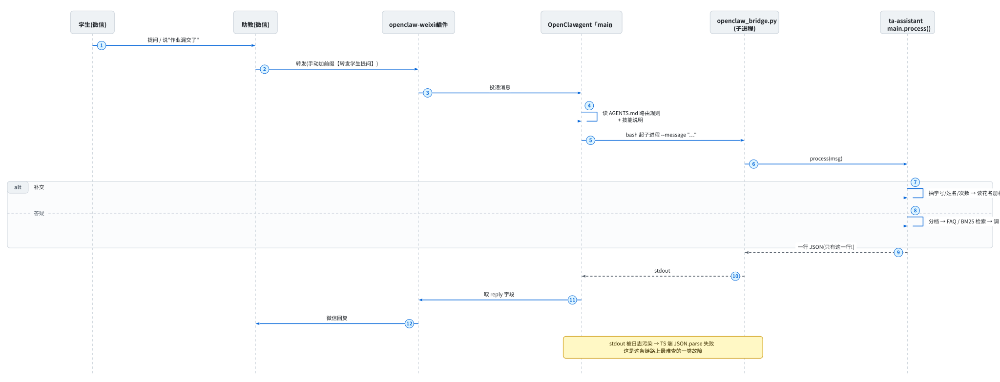

微信端到端跑通手册
记录时间:2026-09-17,最后更新 2026-09-20 · 环境:Windows 11 + WSL2 Ubuntu-24.04 + OpenClaw 2026.9.4 + Node 24.21 本文记录的是实测跑通的那条链路,每一步都附上可复制的命令和实测输出。 姊妹文档:
deployment.md(从零部署)、design.md(内部设计)。2026-09-17 变更记录:MiniMax 额度用尽,全线切到 OpenCode Go 套餐(
deepseek-v4.1-flash); OpenClaw 为支持 Go 从 2026.6.5 升级到 2026.9.4。升级过程中踩的坑见 §7.1。2026-09-20 变更记录:修掉"每条微信回复都挂
↪️ Model Fallback: aipai/claude-opus-4-8"。 根因是运行时会话状态里被自动回退钉住了 aipai,改配置无效。修法 = 给 opencode-go 显式声明模型contextWindow(§4.3)+ 从modelPolicy.allow摘掉非 opencode-go 模型 + 清掉会话状态里的覆盖字段。完整根因链与复现/修法见 §7.5。
0. 先说清楚:这条链路上谁负责什么#
很多人(包括我)一开始会以为"ta-assistant 要自己去连微信"。不是的。
| 角色 | 是什么 | 职责 | 它挂了会怎样 |
|---|---|---|---|
| 微信 | 助教的微信号 + 学生 | 助教把学生消息转发给 Bot | — |
| openclaw-weixin 插件 | OpenClaw 的微信渠道插件 | 连接微信侧网关,收消息、发回复 | 微信里 Bot 不吭声 |
| OpenClaw agent | 一个有 bash 工具的大模型智能体 | 判断消息类型,调后端,把结果发回微信 | Bot 回复变智障(自己瞎答) |
| agent 的模型 | OpenCode Go 套餐(deepseek-v4.1-flash) |
agent 自己的"大脑" | 回退到 aipai/claude-opus-4-8;见 §4.3 |
| ta-assistant | 本项目,一个被调用的 Python 程序 | 补交登记(写 Excel)/ 答疑(查资料 + 大模型) | 返回错误 JSON,agent 说"暂时不可用" |
| OpenCode Go API | 第三方大模型(同一套餐,独立配额) | 把检索到的资料组织成通顺回答;概念题允许用自己的通用知识讲解(见 §7.7) | 答疑降级为"资料原文"(仍可用) |
两个模型是两套独立配置:agent 的在
~/.openclaw/openclaw.json, ta-assistant 的在~/ta-assistant/.env。改一个不会影响另一个,排障时要分开看。 现在两边都用 OpenCode Go,但用的是两个不同的 Key 字段(OPENCODE_API_KEYvsLLM_API_KEY)。
关键认知:ta-assistant 不是常驻服务,它不主动连微信,也没有端口在监听。 它就是一个命令行程序:OpenClaw 每次需要处理学生消息时,起一个子进程调它,读一行 JSON,进程结束。
一次转发到底经过谁(顺序图;下面那张 ASCII 图是同一件事的"谁住在哪"视角):

↔ 这张图比正文宽:右边还有内容,把鼠标放在图上横向滚动(或按住 Shift 滚滚轮)就能看完。
这张图的源码(想改的话复制这段)
sequenceDiagram
autonumber
participant S as 学生(微信)
participant T as 助教(微信)
participant PL as openclaw-weixin 插件
participant AG as OpenClaw agent「main」
participant BR as openclaw_bridge.py<br/>(子进程)
participant TA as ta-assistant<br/>main.process()
S->>T: 提问 / 说"作业漏交了"
T->>PL: 转发(手动加前缀【转发学生提问】)
PL->>AG: 投递消息
AG->>AG: 读 AGENTS.md 路由规则<br/>+ 技能说明
AG->>BR: bash 起子进程 --message "…"
BR->>TA: process(msg)
alt 补交
TA->>TA: 抽学号/姓名/次数 → 读花名册校验 → 追加补交表
else 答疑
TA->>TA: 分档 → FAQ / BM25 检索 → 调 OpenCode Go 润色
end
TA-->>BR: 一行 JSON(只有这一行!)
BR-->>AG: stdout
AG->>PL: 取 reply 字段
PL->>T: 微信回复
Note over BR,AG: stdout 被日志污染 → TS 端 JSON.parse 失败<br/>这是这条链路上最难查的一类故障 ┌──────────────────────────────────────────────┐
助教微信 ──转发──▶ │ OpenClaw(WSL, systemd 常驻) │
带前缀的消息 │ │
│ ① openclaw-weixin 渠道收消息 │
│ ② 投递给 agent「main」会话 │
│ ③ agent 读 AGENTS.md 路由规则 + 技能说明 │
│ ④ bash 起子进程: │
│ .venv/bin/python scripts/openclaw_bridge.py │
│ ⑤ 读回一行 JSON,把 reply 原样发回微信 │
└───────────────┬──────────────────────────────┘
│ 子进程(stdin/stdout)
┌───────────────▼──────────────────────────────┐
助教微信 ◀──回复── │ ta-assistant(被调用,跑完即退) │
│ 前缀过滤 → 分类 → 补交 handler / 答疑 handler │
│ │ │ │
│ 写 Excel 补交表 分档 → FAQ / BM25 检索 │
│ └─▶ OpenCode Go 大模型 │
└──────────────────────────────────────────────┘
1. 为什么接入方式是"技能 + AGENTS.md",而不是改代码#
OpenClaw 的 agent 本身就能跑 shell,还支持 workspace 技能(SKILL.md)。
所以接 ta-assistant 的正确做法不是改它的源码,而是用它的扩展点告诉它该调什么:
| 接入件 | 装在哪 | 作用 |
|---|---|---|
deploy/openclaw/workspace/skills/ta-assistant/SKILL.md |
~/.openclaw/workspace/skills/ta-assistant/SKILL.md |
怎么调、返回 JSON 怎么处理、失败怎么办 |
| 路由规则段落 | 追加到 ~/.openclaw/workspace/AGENTS.md 末尾 |
带前缀的消息不许自己回答,必须走后端 |
这样做的三个好处:
- 不动 OpenClaw 的配置结构(
openclaw.json一个字没改),它升级不会把我们覆盖掉 - 接入件进版本库,随
ta-assistant一起同步、一起回滚 - 失败可诊断:"agent 没调用后端" 和 "后端自己挂了" 是两件事,分开查
升级路径:想要 100% 确定性、不经过大模型判断,可以把 ta-assistant 包装成 MCP 工具(
openclaw mcp add), 让 agent 调工具而不是跑 shell。当前方案够用,先不引入(见deploy/openclaw/README.md)。
2. 一键安装接入件#
在 WSL 里:
cd ~/ta-assistant
bash scripts/install_openclaw_skill.sh
脚本做三件事(全部幂等,可以反复跑):
- 拷贝技能文件到
~/.openclaw/workspace/skills/ta-assistant/SKILL.md(覆盖更新) - 把路由规则追加到
AGENTS.md(只在没有标记时追加一次;追加前自动备份成AGENTS.md.bak.<时间戳>) - 自动跑一次 bridge 冒烟自检
实测输出:
==> 项目根目录 : /home/jj/ta-assistant
==> 目标 workspace: /home/jj/.openclaw/workspace
==> [1/3] 技能已装:/home/jj/.openclaw/workspace/skills/ta-assistant/SKILL.md
==> [2/3] 路由规则已追加到 AGENTS.md(旧文件已备份为 AGENTS.md.bak.*)
==> [3/3] 后端自检:
bridge OK(exit=0),JSON 前 120 字:
{"type": "question", "reply": "(LLM 暂不可用,以下是相关资料原文)\n【来源:...
确认 OpenClaw 真的看到了这个技能:
openclaw skills list | grep -i ta-assistant
openclaw skills info ta-assistant
实测:
│ ✓ ready │ ta-assistant │ 数字电路实验课助教后端(ta-... │ openclaw-workspace │
Details:
Source: openclaw-workspace ← 关键:来自 workspace,不是 bundled
Path: ~/.openclaw/workspace/skills/ta-assistant/SKILL.md
Visible to model: yes
回滚方式:删掉 ~/.openclaw/workspace/skills/ta-assistant/,
再用备份还原 AGENTS.md:cp ~/.openclaw/workspace/AGENTS.md.bak.<时间戳> ~/.openclaw/workspace/AGENTS.md。
3. 五段健康检查(从小到大排障)#
按这个顺序查,能一次定位问题出在哪一跳。
链路上有四个能"安静地失败"的地方:插件没连上、agent 自己瞎答、 后端降级成资料原文、模型回退到另一个模型。每一跳的表现都差不多 ——微信那头都是"回复得不太对"。从最小的一段开始查,每次只引入一个新变量, 才能知道是哪一跳坏了;一上来就在微信里试,等于同时怀疑四个人。
3.1 第一段:ta-assistant 本体(不涉及 OpenClaw)#
/home/jj/ta-assistant/.venv/bin/python \
/home/jj/ta-assistant/scripts/openclaw_bridge.py \
--message '【转发学生提问】Proteus 在哪下载?'
期望:stdout 恰好一行 JSON,形如 {"type": "question", "reply": "...", "sources": [...]},退出码 0。
# 看后端有没有记录这次调用(每次都会写)
tail -5 ~/ta-assistant/data/logs/$(date +%Y-%m).log
3.2 第二段:ta-assistant 的大模型通道是否可用#
答疑会调大模型润色。额度/权限/网络有问题时,整条链路不会崩,而是降级:
答复变成"资料原文 + 来源列表"(格式是 (LLM 暂不可用,以下是相关资料原文))。
用项目自己的客户端探活(比手搓 HTTP 准,因为带上了一样的请求头和重试逻辑,且不打印 Key):
cd ~/ta-assistant && .venv/bin/python -c "
import sys; sys.path.insert(0, '.')
from src.llm.minmax import MinMaxClient
c = MinMaxClient.from_env()
print('端点 :', c.endpoint)
print('模型 :', c.model)
print('Key 长度:', len(c.api_key), '(0 = 会退回旧 MiniMax 通道)')
print('会话头 :', c.session_header or '(不发送)')
out = c.chat('回答要简洁准确。', '用一句话说什么是竞争冒险。')
print('回答 :', out[:120] if out else '(空 —— 没调通)')
"
模块名还叫
minmax.py是历史原因(为了不动handlers/里的 import), 它现在其实是个 OpenAI 兼容客户端,默认走 OpenCode Go。命名见 §7.1。
判读:
| 输出 | 含义 |
|---|---|
有非空回答,且 data/logs/llm.log 新增一行 "ok": true |
大模型正常 |
回答为空 + llm.log 里 "ok": false |
看 llm.log 的 error 字段 |
只要一调用就 400 MissingSessionID |
少了 x-opencode-session 头(客户端会自动带,除非 LLM_SESSION_HEADER 被清空) |
| 403 且提到 Cloudflare(code 1010) | UA 被拦,检查 LLM_USER_AGENT 是否被改成空 |
Key 长度: 0 |
.env 里 LLM_API_KEY 没填,会静默走旧的 MiniMax 兜底通道 |
3.3 第三段:OpenClaw 网关与微信渠道#
systemctl --user status openclaw-gateway.service # 是否常驻在跑
openclaw channels list # 渠道是否配置
openclaw channels status # 渠道是否真的连着
实测:
openclaw-weixin default: installed, configured, enabled
openclaw-weixin af17203b49a1-im-bot: installed, configured, enabled
# channels status:
Gateway reachable.
- openclaw-weixin af17203b49a1-im-bot: enabled, configured, running, in:11h ago
in:11h ago = 该账号最近一次收到入站消息距今多久。如果这个数字一直不更新,
说明微信侧根本没有消息进来(网关没收到),问题在微信这一跳,不在 ta-assistant。
3.4 第四段:agent 是否能正确路由(不经过微信)#
这是最有价值的一步:它绕开微信,直接给 agent 喂一条带前缀的消息。
cd ~/.openclaw/workspace
openclaw agent --agent main --message '【转发学生提问】什么是竞争冒险?'
注意必须带
--agent main,否则报No target session selected。
成功的样子:agent 的回复约等于 ta-assistant 的 reply 原文;
同时 ~/ta-assistant/data/logs/2026-09.log 新增 3 行(process_input / classify / reply)。
实测(2026-09-17 18:39,大模型已通):
$ openclaw agent --agent main --message "【转发学生提问】什么是竞争冒险?"
**竞争与冒险**
- **竞争**:在组合逻辑电路中,同一个信号经不同路径、不同延时到达某一会合点,
导致到达时间有先有后,这种现象叫竞争。
- **冒险**:由竞争引起的电路输出端出现瞬间错误(毛刺)的现象,称为冒险。
...
参考:面试--数电.docx, 实验讲义2024.pdf, 数电模电电分复习.docx
$ wc -l < ~/ta-assistant/data/logs/2026-09.log
14 ← 调用前
17 ← 调用后(多了 process_input / classify / reply 三行)
如果回复是
(LLM 暂不可用,以下是相关资料原文),说明链路是通的、只是大模型那一跳挂了 —— 去跑 §3.2,不用查 OpenClaw。
反例测试(确认它不会乱调后端):
openclaw agent --agent main --message "今天下午三点开会"
# 期望:后端日志行数不变(agent 没有调用 bridge)
3.5 第五段:微信真机#
前三段都过了,最后只剩"微信那一跳"。用你自己的微信给 Bot 发一条:
【转发学生提问】Proteus 在哪下载?
同时开一个窗口盯着后端日志:
tail -f ~/ta-assistant/data/logs/$(date +%Y-%m).log
- 日志有新行 + 微信收到回复 → 全链路通 ✅
- 日志无新行 → 消息没到达 agent。查
openclaw channels status(渠道是不是 running)、 以及 OpenClaw 网关日志openclaw logs - 日志有新行但微信没回复 → agent 调了后端但没把结果发出去,查 agent 会话记录
(
~/.openclaw/agents/main/sessions/)
4. 日常运维#
4.1 启动顺序(重启机器后)#
# 1. OpenClaw 网关(systemd user 服务,开机自启,一般不用管)
systemctl --user status openclaw-gateway.service
systemctl --user restart openclaw-gateway.service # 需要重启时
# 2. ta-assistant 不需要启动 —— 它是被调用的命令行程序
ta-assistant 没有常驻进程,不需要启动、不会因为重启机器而失效。
4.2 什么时候需要动配置#
| 场景 | 要做什么 |
|---|---|
| 加/改转发前缀 | 改 ~/ta-assistant/.env 的 FORWARD_PREFIX(逗号分隔,覆盖默认全部),同时更新技能里的前缀说明并重跑安装脚本 |
| 加新资料(PDF/DOCX) | 放进 ~/ykt_questions/materials/,重跑 python scripts/build_index.py |
| 加新 FAQ | 往 ~/ykt_questions/常问问题.txt 追加 Q: / A: 块,不用重建索引 |
| 换大模型 / 换 Key(ta-assistant 侧) | 改 ~/ta-assistant/.env 的 LLM_*,重跑 §3.2 探活 |
| 换大模型 / 换 Key(agent 侧) | 改 ~/.openclaw/openclaw.json(key 要填两处:env.vars 和 models.providers),重启网关,按 §4.3 验证 |
| 更新接入件 | 改仓库里 deploy/openclaw/,同步到 WSL,重跑 install_openclaw_skill.sh |
4.3 agent 用哪个模型(OpenCode Go 配置)#
这条链路上有两个大模型,别搞混:
| 谁在用 | 干什么 | 配置在哪 |
|---|---|---|
| OpenClaw agent | 读消息、决定调不调后端、把 reply 发回微信 |
~/.openclaw/openclaw.json(本节) |
| ta-assistant | 答疑时把检索到的资料组织成通顺回答(概念题可叠加模型自己的通用知识) | ~/ta-assistant/.env 的 LLM_*(见 §3.2) |
OpenClaw 内置了 OpenCode Go 接入(provider id opencode-go,带运行时模型发现),
但光填一个 key 不够 —— 见下面的"⚠️ 关键坑"。
// ~/.openclaw/openclaw.json
{
// ① key 放这里(环境变量形式,给子进程用)
env: { vars: { OPENCODE_API_KEY: "PUT-YOUR-OPENCODE-GO-API-KEY-HERE" } },
// ② ⚠️ 还必须显式声明 provider 并把 key 挂上去,否则实时模型发现不会开
models: {
providers: {
"opencode-go": {
api: "openai-completions",
baseUrl: "https://opencode.ai/zen/go/v1",
apiKey: "PUT-YOUR-OPENCODE-GO-API-KEY-HERE", // ← 同一个 key,填两遍
// ③ ⚠️⚠️ 还要**逐条声明模型元数据**,尤其是 contextWindow。见 §7.5。
// 在线目录(/zen/go/v1/models)只返回一串裸 id,不带任何元数据;
// 而 OpenClaw 自带种子表里漏了 deepseek-v4.1-flash。
// 两处都没有 ⇒ 运行时认为这个模型"上下文窗口未知"。
// 下面的窗口值照抄种子表里同族的 deepseek-v4-flash / -pro。
models: [
{ id: "deepseek-v4.1-flash", name: "DeepSeek V4.1 Flash", input: ["text"],
contextWindow: 1000000, maxTokens: 384000 },
{ id: "deepseek-v4-flash", name: "DeepSeek V4 Flash", input: ["text"],
contextWindow: 1000000, maxTokens: 384000 },
{ id: "deepseek-v4-pro", name: "DeepSeek V4 Pro", reasoning: true, input: ["text"],
contextWindow: 1000000, maxTokens: 384000 },
{ id: "kimi-k3", name: "Kimi K3", input: ["text", "image"],
contextWindow: 1048576, maxTokens: 131072 },
],
},
},
},
agents: {
defaults: {
model: {
primary: "opencode-go/deepseek-v4.1-flash", // 默认模型(唯一在用的)
fallbacks: [], // ← 留空:不挂任何备用模型
},
// ④ 放行哪些模型允许被 --model 覆盖(不在表里会被拒:
// Model override "..." is not allowed for agent "main")
//
// 这份名单还有第二个作用:**它是运行时"自动回退"的候选池**。
// 所以这里只留 opencode-go 的模型 —— 名单里只要还有别的家,
// 一旦主模型被判"不可用",运行时就会自己挑一个顶上并**写进会话状态**,
// 从此每轮都走那个模型,还在每条回复后面挂一行 fallback 通知(见 §7.5)。
// minimax 的额度已用尽、aipai 是特意不用的,都不能留在这里当候补。
modelPolicy: {
allow: [
"opencode-go/deepseek-v4.1-flash",
"opencode-go/deepseek-v4-flash",
"opencode-go/deepseek-v4-pro",
"opencode-go/kimi-k3",
],
},
},
},
}
aipai(claude)的
models.providers.aipai段、apiKey和别名AI派都原样留着当痕迹, 只是从modelPolicy.allow里摘掉,让它不可能被自动选中。
⚠️ 关键坑(2026-09-17 踩了一整个下午):env.vars 里的 key 不会进网关自己的进程环境
(它只在派子进程时注入),而 provider 的认证解析恰恰读的是自己的进程环境。
于是 auth.discoveryApiKey 永远是空,插件退回内置静态模型表;
静态表里没有 deepseek-v4.1-flash(只有 deepseek-v4-flash / -pro),
所以报 FailoverError: Unknown model → 静默回退到 claude-opus-4-8。
网关启动日志里那句 [gateway] agent model: opencode-go/deepseek-v4.1-flash
只是配置回显,不是校验结果,别被它骗了 —— 真正的判据在下面"怎么确认真的在用 deepseek"。
生效 + 验证(4 步):
# ① 改配置(用 patch,比手改 JSON 稳,会走 schema 校验)
openclaw config patch --file /tmp/patch.json5
openclaw config validate # 期望:Config valid
# ② 重启网关
systemctl --user restart openclaw-gateway.service
# ③ 发一条真消息给 agent
openclaw agent --agent main --message '用一句话解释竞争冒险,不要调用任何工具。'
# ④ 看网关日志里"实际发出的请求"(唯一可信的证据)
grep -oE "provider=[a-z-]+ api=[a-z-]+ model=[a-z0-9.-]+" \
/tmp/openclaw/openclaw-$(date +%Y-%m-%d).log | tail -3
grep -c "Fell back to" /tmp/openclaw/openclaw-$(date +%Y-%m-%d).log
怎么确认真的在用 deepseek:日志里必须出现
[model-fetch] start provider=opencode-go api=openai-completions model=deepseek-v4.1-flash
[model-fetch] response ... status=200
且没有 Model "opencode-go/..." not found. Fell back to "aipai/claude-opus-4-8".
出现 fallback 就说明模型名没解析成功,回到本节看 §7.1。
为什么不挂 fallback:2026-09-17 起
fallbacks留空。原因是原来的备用模型aipai/claude-opus-4-8端点频繁超时(ETIMEDOUT120s+ /ECONNRESET), 一旦切过去,整个 agent 会话就卡死(日志里的stalled session/repeated_model_requests_without_progress), 而且还会把 "fallback" 这件事写进 agent 自己的记忆里反复念(见 §7.4)。 宁可报错,也不要静默降级到一个又慢又说不清的模型。
aipai的 provider 块、apiKey、别名("AI派")都原样保留在配置里, 想临时启用手动--model aipai/claude-opus-4-8仍然可以(它在modelPolicy.allow里); 要恢复自动兜底,把fallbacks改回数组即可。
换默认模型:
openclaw config set agents.defaults.model.primary "opencode-go/kimi-k3"
systemctl --user restart openclaw-gateway.service
# 记得把它也加进 agents.defaults.modelPolicy.allow
Go 套餐常用模型 ref(完整列表 curl -s https://opencode.ai/zen/go/v1/models,
但注意要带 x-opencode-session 头才不被拒):
| model ref | 说明 |
|---|---|
opencode-go/deepseek-v4.1-flash |
当前默认,快、便宜 |
opencode-go/deepseek-v4-flash |
内置静态表里有,保底可用 |
opencode-go/deepseek-v4-pro |
1M 上下文,推理强 |
opencode-go/kimi-k3 |
OpenClaw 官方给 Go 档的默认值 |
opencode-go/qwen3.8-max |
通义旗舰,中文强 |
排障小抄:
openclaw models list看当前生效模型(带default标记);openclaw config get agents.defaults.model看配置值; 改完配置必须重启网关,否则还是旧模型。openclaw models list --provider opencode-go显示 "No models found" 是正常的 (它只列"配置里显式声明"的),不代表模型用不了 —— 以网关日志为准。
4.4 看日志#
tail -f ~/ta-assistant/data/logs/$(date +%Y-%m).log # 后端逐条事件(JSON 行)
tail -f ~/ta-assistant/data/logs/llm.log # 每次大模型调用的耗时/长度
openclaw logs # OpenClaw 网关日志
openclaw channels logs --lines 50 # 渠道收发日志
# agent 到底调了哪个模型(排"是不是又 fallback 了"最快的办法)
grep -oE "provider=[a-z-]+ api=[a-z-]+ model=[a-z0-9.-]+" \
/tmp/openclaw/openclaw-$(date +%Y-%m-%d).log | tail -5
# 有没有回退
grep "Fell back to" /tmp/openclaw/openclaw-$(date +%Y-%m-%d).log | tail -3
# 网关日志是 JSON 行,想看清可读文本可以这样过滤
journalctl --user -u openclaw-gateway.service --since "10 min ago" --no-pager | \
grep -oE '"(message|error)":"[^"]{0,160}"' | tail -20
5. 故障排查表#
| 症状 | 最可能的原因 | 怎么查 / 怎么修 |
|---|---|---|
| 微信发消息,Bot 完全不理 | 渠道断了 / 微信侧掉线 | openclaw channels status,看 running 与 in:... ago |
| Bot 回"非学生消息,未处理" | 前缀被剥掉或被改字符 | 查后端日志的 process_input 事件,对比 first_20_codepoints 与 prefix_used |
| Bot 自己瞎答,没走后端 | agent 没读到路由规则/技能 | openclaw skills info ta-assistant 看 Visible to model: yes;确认 AGENTS.md 里有路由段落 |
| 答复变成"资料原文" | ta-assistant 的大模型通道挂了(额度/Key/网络) | 跑 §3.2 探活,看 data/logs/llm.log 的 ok / error |
| 微信 Bot 答得"不像 deepseek"(例如回退到昂贵的 claude) | agent 的模型名没解析成功,静默回退到 fallbacks |
日志里搜 Fell back to;§4.3 ⚠️ 关键坑 + §7.1 |
每条回复后面都挂着 ↪️ Model Fallback: aipai/… |
会话状态里被自动回退钉住了旧模型,配置改不动它 | openclaw sessions 看 Model 列;查 session_nodes.entry_json 的 modelOverrideSource;§7.5 |
| Bot 每条回复都要提某个配置里已经没有的东西(模型名/fallback/旧规则) | agent 自己写的记忆被每轮召回 | grep -rn "<那段话>" ~/.openclaw/workspace/;§7.4 |
| Bot 长时间不回,会话"卡住" | 模型端点超时,stalled session |
日志搜 stalled session;确认 fallbacks 为空、主模型端点可达 |
| 答复是"知识库尚未构建" | 索引没建 / 资料目录变了 | python scripts/build_index.py |
| 补交没登记上 | 学号不在花名册 / 正则没抽到 | 看 reply 里的原因;核对成绩记分册里的学号 |
openclaw agent 报 No target session selected |
没指定会话 | 加 --agent main |
| bridge stdout 不是纯 JSON | 某处 print() 污染了 stdout |
回归测试:pytest test/test_bridge_stdout_clean.py -v |
6. 三层验证清单(改完东西照着过一遍)#
# ① 后端层(30 秒,不依赖 OpenClaw)
~/ta-assistant/.venv/bin/python ~/ta-assistant/scripts/openclaw_bridge.py \
--message '【转发学生提问】Proteus 在哪下载?'
pytest ~/ta-assistant/test/ -q
# 检索有没有退化(改了语料/锚点/参数之后必跑;基线缺失也会返回 1)
cd ~/ta-assistant && ./.venv/bin/python scripts/eval_retrieval.py --compare
# ② agent 层(1 分钟,不依赖微信)
cd ~/.openclaw/workspace && openclaw agent --agent main --message '【转发学生提问】什么是竞争冒险?'
# ③ 微信层(需要手机)
# 自己在微信里给 Bot 发一条带前缀的消息,盯着后端日志
tail -f ~/ta-assistant/data/logs/$(date +%Y-%m).log
7. 已知问题与待办(2026-09-17 首次实测,2026-09-20 增补)#
十条问题按时间铺开,一眼看出哪些还欠着:
2056,agent 和本项目两边都切 OpenCode Go ✅7.1 MiniMax 额度用尽 → 全线切 OpenCode Go(已解决 ✅)#
起因:MiniMax Token Plan 额度用尽(探活返回 status_code: 2056),
答疑的"润色"环节降级成"资料原文"。于是把 agent 和 ta-assistant 两边都换成
OpenCode Go 套餐的 deepseek-v4.1-flash。
ta-assistant 侧:改 .env 即可,已跑通。
src/llm/minmax.py 被改写成 OpenAI 兼容客户端(模块/类名故意没改,免得动 handlers/ 的 import)。
回滚开关:把 .env 里 LLM_API_KEY 清空,会自动退回旧 MiniMax 通道。
OpenClaw 侧:踩了三个坑,全部已解决 ——
| # | 坑 | 现象 | 解法 |
|---|---|---|---|
| 1 | 2026.6.5 根本用不了 Go | 静态模型表里没有 deepseek-v4.1-flash,且整个版本搜不到 x-opencode-session |
升级到 2026.9.4(要求 Node ≥24.16) |
| 2 | 升级后微信通道崩 | channel exited: Package subpath './plugin-sdk/channel-runtime' is not defined by "exports" —— 新版删掉了这个导出,而微信插件 2.4.3 还在 import 旧名字 |
openclaw plugins update @tencent-weixin/openclaw-weixin@latest(2.4.3 → 2.4.9)。注意插件被 pin 住,update --all 不会升它 |
| 3 | 升级后仍 fallback 回 claude-opus | 见 §4.3 ⚠️ 关键坑:env.vars 的 key 进不了 provider 认证,实时模型发现不开,退回静态表 → Unknown model |
在 models.providers["opencode-go"] 里显式挂 apiKey |
升级 OpenClaw 的正确姿势(下次别再踩):
# ① 先停网关(数据库迁移要求离线),再备份
systemctl --user stop openclaw-gateway.service
cp ~/.openclaw/openclaw.json ~/.openclaw/openclaw.json.bak.$(date +%Y%m%d-%H%M%S)
cp ~/.openclaw/agents/main/agent/openclaw-agent.sqlite ~/.openclaw/openclaw-agent.sqlite.bak.$(date +%Y%m%d-%H%M%S)
# ② 升级(npm 11 会默认跳过 postinstall 脚本,必须显式放行,否则内置插件装不上)
npm i -g openclaw@latest --allow-scripts=openclaw,@google/genai,koffi,tree-sitter-bash,protobufjs
# ③ 修配置 + 迁移数据库(一条命令全干)
openclaw doctor --fix
# ④ 校验后启动
openclaw config validate
systemctl --user start openclaw-gateway.service
坑中坑:
openclaw config patch在配置不合法时会拒绝写入, 而配置不合法恰恰就是你要改它的原因 —— 这时只能靠openclaw doctor --fix破局。版本间 schema 变了:
env.OPENCODE_API_KEY→env.vars.OPENCODE_API_KEY, 另外meta.lastTouchedAt、gateway.controlUi.allowInsecureAuth、gateway.tailscale.resetOnExit、gateway.nodes.denyCommands、plugins.bundledDiscovery这 5 个键被彻底删除(不是挪位置)。agents.defaults.models(旧)→agents.defaults.modelPolicy.allow(新)。回滚:
npm i -g openclaw@2026.6.5+ 还原 sqlite/配置备份 (前提是没跑过doctor --fix,跑过就必须一起还原 sqlite)。
7.2 FAQ 文件缺失#
~/ykt_questions/常问问题.txt 不存在,日志里每次都会提示:
[FAQRetriever] FAQ 文件不存在:/home/jj/ykt_questions/常问问题.txt
FAQ 是"第一级高速通道"(精确匹配、不花大模型额度),缺了会直接掉到 BM25 + 大模型。
注意:只有课程事务类提问(交作业/截止/成绩/考试)才会走这条速通;
概念题和具体题号一律要查资料并调大模型 —— 这是 2026-09-20 晚的分档改造,
详见 docs/knowledge_base.md §6 与 §7.7。
把文件放到位即可,不需要重建索引。
7.3 补交去重(24 小时窗口)未实现#
重复提交会追加一条新记录,而不是标记"重复"。助教核对时需要自己看。
7.4 agent 的"自传记忆"会把旧话题一直挂在嘴边 ⚠️#
现象:修好 fallback 之后,微信 Bot 每条回复都还要提一句"fallback 备用模型是 aipai/claude-opus-4-8"。
原因:OpenClaw 的 memory-core 插件会自动把会话里的事写进 workspace 的记忆文件
(~/.openclaw/workspace/memory/YYYY-MM-DD.md),而且每轮对话都会召回。
它自己写了这么一段:
- 12:57 / 16:06 用户两次问「你是什么模型?」→ 我两次错误回答为 `aipai/claude-opus-4-8`。
- **模型身份必须以当前 turn 的 Runtime/系统上下文为准**…更不要把 fallback 别名当作当前模型报给用户。
这段被召回进上下文 → 模型就顺着聊 fallback。配置改对了也没用,因为污染源不在配置里。
排查手法:回复里出现了配置里已不存在的东西时,
grep -rn "<那段话>" ~/.openclaw/workspace/。
处理:
# ① 备份后重写记忆文件,删掉污染内容
cp ~/.openclaw/workspace/memory/2026-09-17.md{,.bak.$(date +%Y%m%d-%H%M%S)}
# …编辑该文件…
# ② 重建派生索引(否则旧文本还留在索引里,照样被召回)
openclaw memory reset --yes # 清掉派生索引 + 向量缓存(不删会话)
openclaw memory index # 从文件重建
# ③ 验证(用新文件里确实存在的词,证明检索本身是好的)
openclaw memory search fallback # 期望 No matches
openclaw memory search 运行时 # 期望能搜到新内容
memory reset在非交互模式下必须加--yes,否则报Memory reset requires confirmation。顺带一提:日志里
memory_index_chunks_vec not updated — semantic vector embeddings unavailable是因为没配 embedding provider,不影响上面这套关键词召回。
7.5 每条微信回复都挂着 ↪️ Model Fallback: aipai/claude-opus-4-8 … ⚠️⚠️#
现象(2026-09-20):配置早就改对了 —— primary 是 deepseek、fallbacks: []、
aipai 也不在任何自动链路里 —— 但每条微信回复后面都跟着:
↪️ Model Fallback: aipai/claude-opus-4-8 (selected opencode-go/deepseek-v4.1-flash; selected model unavailable)
selected model unavailable 这半句很误导:它不是真实诊断,而是
buildFallbackReasonSummary() 在一次请求都没发过(attempts 为空)时的占位文案。
这段通知是怎么来的(源码 dist/agent-runner.runtime-*.mjs):
function buildFallbackNotice(params) {
const selected = formatProviderModelRef(params.selectedProvider, params.selectedModel); // 配置里选的
const active = formatProviderModelRef(params.activeProvider, params.activeModel); // 这一轮实际用的
if (areRuntimeModelRefsEquivalent(selected, active, { config: params.cfg })) return null;
return `↪️ Model Fallback: ${active} (selected ${selected}; ${buildFallbackReasonSummary(params.attempts)})`;
}
只要"这一轮实际用的模型" ≠ "配置里选的模型",就挂这行通知。 所以问题不是"为什么回退", 而是"为什么实际在用 aipai"。
根因(三层,缺一不可):
- 运行时目录里
deepseek-v4.1-flash没有上下文窗口。 - OpenClaw 的opencode-goprovider 靠在线发现拿模型列表,而https://opencode.ai/zen/go/v1/models只返回一串裸 id,不带context_length/modalities:id=deepseek-v4.1-flash ctx=None max_out=None mod=None- OpenClaw 自带的种子表(dist/provider-catalog-*.mjs)是唯一的元数据来源, 但它整份 dist 里 0 次出现deepseek-v4.1-flash(同族的deepseek-v4-flash/-pro都在,声明了contextWindow: 1e6)。 - 两处都没有 ⇒ 目录里这个模型是Input: - Ctx: -。 - 会话涨到 131k token,预检判定"选中的模型装不下"(窗口未知 ⇒ 预算按内置默认 200k 算,
而会话已经压线)。这一轮连 HTTP 请求都没发出去就换了模型 —— 这正是
attempts为空、通知里出现"selected model unavailable"占位串的原因。 → 运行时从modelPolicy.allow(候选池) 里挑下一个可用模型 =aipai/claude-opus-4-8(它声明了 128k,Input: text+image,是名单里唯一"有窗口"的备选)。 - 这次自动回退被持久化进了会话状态。 这是最关键、也最容易被忽略的一层:
$ python3 -c "…读 session_nodes.entry_json…"
modelProvider : opencode-go
model : deepseek-v4.1-flash
providerOverride : aipai ← ★
modelOverride : claude-opus-4-8 ← ★
modelOverrideSource : auto ← ★ "auto" = 自动回退留下的
modelOverrideFallbackOriginProvider : opencode-go
modelOverrideFallbackOriginModel : deepseek-v4.1-flash
authProfileOverride : aipai:models-json ← ★ 连认证 profile 都被钉到 aipai
authProfileOverrideSource : auto
fallbackNotice : { selectedModel: opencode-go/deepseek-v4.1-flash,
activeModel: aipai/claude-opus-4-8, reason: selected model unavailable }
配置改一百遍也没用 —— 这枚钉子钉在会话状态里(sqlite),不在配置里。
而且因为 fallbacks: [],运行时的 "selected" 永远是配置里的 deepseek,
"active" 永远是会话里钉住的 aipai,两者恒不相等 ⇒ 每轮都满足发通知的条件。
排查手法(三步锁定):
# ① 会话列表直接会显示它到底在跑哪个模型 + 上下文占用
openclaw sessions
# │ direct │ agent:main:openc...wechat │ Model: claude-opus-4-8 │ 131k/128k (103%) │
# ② 逐轮比对"入站消息 → 实际请求的 provider"
python3 - <<'EOF'
import json,pathlib,re
for line in pathlib.Path("/tmp/openclaw/openclaw-$(date +%F).log").read_text(errors="ignore").splitlines():
if "[model-fetch] start provider=" in line or "inbound: from=" in line:
d=json.loads(line); print(d["time"][11:19], str(d.get("message"))[:110])
EOF
# 00:55:07 → opencode-go/deepseek-v4.1-flash ← 第 1 轮好好的
# 00:55:23 → aipai/claude-opus-4-8 ← 第 2 轮一上来就是 aipai,没试过 deepseek
# ③ 直接读会话状态里的覆盖字段(上面那段)
处理(2026-09-20 已做,+ 号表示新加的):
# ① 配置:给 opencode-go 逐条声明 models(补上 contextWindow),并把非 opencode-go 的
# 模型从 modelPolicy.allow 里摘掉(见 §4.3)
cp ~/.openclaw/openclaw.json{,.bak.$(date +%Y%m%d-%H%M%S)}
# …编辑… 然后校验:
openclaw config validate # 期望:Config valid
# ② 停网关 —— 必须先停!否则内存里的旧会话状态会写回 sqlite
systemctl --user stop openclaw-gateway.service
# ③ 备份 sqlite
DB=~/.openclaw/agents/main/agent/openclaw-agent.sqlite
cp -a "$DB" "$DB.bak.pin.$(date +%Y%m%d-%H%M%S)"
# ④ 清掉会话状态里的模型 / 认证覆盖(这 9 个字段):
# providerOverride, modelOverride, modelOverrideSource, modelOverrideRouteResolution,
# modelOverrideFallbackOriginProvider, modelOverrideFallbackOriginModel,
# authProfileOverride, authProfileOverrideSource, authProfileOverrideCompactionCount,
# fallbackNotice
# (用 python 读 session_nodes.entry_json → 删键 → UPDATE 回去,见 logs/)
# ⑤ 重启 + 验证
systemctl --user start openclaw-gateway.service
openclaw models list # 期望 opencode-go 四行都有 Ctx:1000k / Input:text
openclaw sessions # 期望 Model 列变成 deepseek-v4.1-flash,131k/1000k (13%)
实跑验证(不往微信发消息的办法):openclaw agent 的 --deliver 默认是 false,
所以可以拿一次性会话跑真轮次,只把结果打到终端:
openclaw agent --session-key agent:main:selftest-$(date +%H%M%S) \
-m "只回答两个字:收到" --json | python3 -c "
import json,sys; m=json.load(sys.stdin)['result']['meta']['agentMeta']
print(m['provider'], m['model'], m['contextTokens'], m['contextTokensSource'])"
# 期望:opencode-go deepseek-v4.1-flash 1000000 resolved
# ↑ contextTokensSource 从"未知"变成 resolved,说明窗口真的解析到了
日志侧应对应上 [model-fetch] start provider=opencode-go … status=200,且没有任何
Fell back to / embedded run failover decision 行。
教训:
- 只看配置("我明明改对了")会一直卡住。OpenClaw 的会话状态里有一层模型/认证覆盖,
优先级高于配置,而且
fallbacks: []挡不住它 —— 它走的是"自动回退"这条独立通路。 modelPolicy.allow不只是"允许手工切换的名单",它就是自动回退的候选池。 名单里留着一个能用但不想用的模型,等于给它留了一个随时被自动顶上的后门。- 通知里的 reason 文案可信度有限:
selected model unavailable只是attempts为空时的占位串, 不代表真的发过请求并失败。 - 判断"到底在用什么模型"的唯一可信来源是运行时日志的
[model-fetch]行和session_nodes.entry_json,不是配置文件、也不是模型的自我陈述。
与 §7.4 的关系:7.4 解决的是"agent 在对话里提到 fallback"(记忆污染), 7.5 解决的是"运行时主动挂上 fallback 通知"(会话状态覆盖)。两件事都修了才算干净。
7.6 资料目录名 —— 已确认(2026-09-20 结案)#
src/config.py 里 MATERIALS_DIR = ~/ykt_questions/materials,就是实际在用的那份,不用改配置。
一度以为要用的是 Windows 侧那份 C:\Users\52880\Downloads\ykt_questions\(旧部署文档里是这么写的),
但 2026-09-17 的补交表比对给出了结论:运行时后端在 ~/ykt_questions/ 下新建了
补交表.xlsx(工作表 补交记录,9 行,日期 2026-09-17),而 Windows 那份还是 4 月 21 日的
150 行成绩记分册。所以 ~ 那份才是活的,Windows 那份是历史遗留。
没有改动 WINDOWS_ROOT,也就不会把已登记的补交记录孤儿掉。
2026-09-20 已把 Windows 旧库里的数电资料搬进 ~/ykt_questions/materials/,两份合流。
知识库的完整说明(内容、来源、重建步骤、已知限制)见 knowledge_base.md。
7.7 概念题会回"这个我不确定,建议问任课老师" —— 已改 ✅(2026-09-20 晚)#
助教反馈:问「什么是叠加原理」这种概念题,机器人只会回"建议问任课老师", 这不合理 —— 概念性的内容应当让大模型讲清楚,并结合库里已布置的作业题帮学生理解。
根因是提示词写死了"只依据资料作答,资料里没有就说不知道"。这条规则本身是为了治 "资料里没有却凭自己的知识瞎讲",但做过头了:知识库里只有作业答案、没有教材正文, 于是所有概念题都被这堵墙挡住。
现在把"资料里没有"拆成三档(src/handlers/qa.py 的 _classify() + _SYSTEM_PROMPT):
| 档 | 例子 | 行为 |
|---|---|---|
| 具体题号 | 1.36 怎么做 | 只认资料里那道题的解答;没有就明说没找到,不许自己解(版次不同题号会串) |
| 课程事务 | 怎么交作业、截止、成绩、考试安排 | 一个字都不许猜,资料没有就回"这个我不确定,建议问任课老师" |
| 学科概念 | 什么是叠加原理 | 先看检索到的「教材」或「讲义」(中文版第 6 版教材 / 张老师课件);有就以它为准,没有才用自己的通用教材知识(须自报「通用教材知识,供参考」)。两种情况都要挂上库里相关作业题当例子 |
顺带:FAQ 快路(命中就不查资料)现在只留给事务题 —— 概念题即使命中 FAQ 也照常查资料, 把 FAQ 当补充材料一起喂进去;具体题号则连 FAQ 都不加(问 1.36 时那条"作业怎么提交"纯属噪声)。
⚠️ 这里原来写的是"命中就不调大模型",是错的:事务题命中 FAQ 时只是不查资料, 答复仍然由大模型润色(28 条实测:FAQ 原文里的数字一条都没丢,但会换写法、也会增补)。 四份文档同时写错了同一件事,勘误与实测见
knowledge_base.md§5.4。
注意:没有联网。① 档的讲解优先来自库里的教材/讲义,两者都没有时才落回模型自己的
知识(这时才需要自报"通用教材知识")。但无论哪一路,都不是实时搜索结果 ——
src/llm/minmax.py 是纯 chat completion,没有 tool calling。要联网得先加搜索步骤。
完整说明与实测记录见 knowledge_base.md §6。
教材进来之后(§7.9),这一档的"资料里有"覆盖面大了很多 —— 全书 19 章都有正文, 而讲义只覆盖 11 章、作业答案只覆盖 13 章。
7.8 作业答案用中文版的参数,不用国际版的 —— 已改 ✅(2026-09-20 深夜)#
助教反馈:国际版教材和中文版作业册个别题目的参数/单位不一样(例如公里变成了英里), 所以课后题答案要以中文版作业用书为准。原先库里只有英文版 Soln,答出来的数可能是 错的那一版。
处理办法不是再加一套答案,而是让同一道题落进同一个文件:
materials/电路基础/1第一章/1.36.md
【…参考答案(中文版)】 ← 标题头;正文与结论以此为准
【中文详细解析】 ← 大模型按**中文原文**重新生成
【原文(核对用,未经改动)】← 中文版原文
【英文版对照(仅参考)】 ← 国际版原文降级到这里,并注明"数值一律以中文版为准"
优先级写在文件结构里,而不是靠提示词自觉 —— 中英两段同时在文件里时,
中文在前、英文那段顶着"仅参考"的帽子。提示词里另钉了一遍(_SYSTEM_PROMPT 的
【中文版优先】段),但那是第二道保险,不是第一道。
对回答的实际影响:同一道题问两遍不会再出两个数;学生照着算出来的答案和作业册一致。 中文版没布置的题(第 13、19 章等 12 道)原样保留,不受影响。
注意:本次只重写了有中文版的那 56 题的解析(英文版独有的题沿用旧解析,它们本就
不该被覆盖),所以大模型调用只多了 56 次。原理见 knowledge_base.md §3.3。
7.9 中文版第 6 版教材 OCR 进库 —— 已完成 ✅(2026-09-20 深夜)#
这是 7.7 那个问题的根治:概念题以前没有教材正文可依,只有 PPT 提纲和作业答案。
助教点名要的"中文版第六版教材"一直是库里唯一进不去的东西 —— 它 266 MB / 711 页,
是纯扫描件,pdfplumber 一个字都抽不出来。
现在用 RapidOCR 全量 OCR 后进了索引:21 个文件 / 2106 块(全书 19 章 + 附录 + 译者序)。
勘误(2026-09-20 更晚):同上那天稍后做了一轮教材语料审计,丢掉了 1 页 扫描仪元信息页,所以现在的数字是 2105 块(全库 3165 块)。 同一轮还修了
Ω被 OCR 认成Q(1932 处)和页码标记覆盖率(35.8% → 99.7%), 见knowledge_base.md§3.5.1。本节下面的数字都是当时的实测值, 保留原样;要引用就用 §3.5.1 那份。
| 引擎 | RapidOCR(ONNX)。选它不是因为效果好,是因为 sudo 要密码、装不了 tesseract |
| 耗时 | 711 页 / 12 进程 / 47.9 分钟(约 3.2 秒每页),74.4 万字符 |
| 落盘 | ~/ykt_questions/materials/电路基础/教材/教材-第N章-<章名>.md |
| 教材正文 | /mnt/c/Users/52880/Downloads/202509电路理论基础/电路基础-中文版-原书第6版（扫描版）.pdf |
| 中间产物 | ~/ykt_questions/_ocr_cache/电路基础-6th/p####.txt(按页缓存,不在 materials/ 下,不进索引) |
三件必须知道的事:
- 页码对得上。
印刷页 = PDF 页 − 16(书前 16 页是罗马数字页码)。 所以答复里说「教材第188页」,学生翻书就能找到 —— 错误集锦写的也是书上页码。 这个偏移有 711 页逐页书眉自查兜底,零不一致。 - 每页都带
[教材 P{印刷页}]标记,这是教材比讲义强的地方(PPT 没有页码)。 - 公式是 OCR 出来的,会乱码。 正文很准,公式/上下标常有错。提示词里因此加了一条: 引用要给页码,看到不成句的公式就照实说"OCR 得不清楚,请对照教材 P某页",不要猜。
没有把答案挤出去 —— 这是量出来的。 教材占全库 66%,入库前后跑了同一组提问对照:
带题号的提问(1.36 怎么做、13.11 那题怎么做)答案文件依然占满 top-7 而且分数还涨了
(16.05→19.57、16.97→20.20),错误集锦仍在最前;而 什么是叠加原理 从
"讲义一句 + 数电噪声"变成"讲义 + 教材第4章/第10章"。
完整对照表见 knowledge_base.md §9.5。
这一轮没有做的事:题图仍然看不到(要到切图 + 挂题号那一步), 英文教材正文和 4th 版答案手册仍然不进索引(理由没变)。
7.10 检索质量的"闸门":修 IDF 兜底 + 建常驻评测 —— 已完成 ✅(2026-09-20 更晚)#
和微信链路本身无关,但会直接影响微信里回出来的话,所以记在这里。
起因是助教验收「叠加原理」之后让我自己再找问题 —— 结果量出来一个真错:
问什么是叠加原理,教材-第5章-运算放大器.md(13.53 分)排在了第 4 名(13.47 分)前面,
两章毫无关系。
根因在检索库的兜底,不在语料:rank_bm25 对出现在半数以上分块里的词,
IDF 算出来是负数,它一律兜底成同一个正数。实测本库 的/是/原理
全部等于 1.6994 —— 于是 什么+是+原理 给每一章白送 7.3 分,
"什么词都匹配"成了证据。换成 Lucene 的 IDF 写法后 原理 1.70 → 0.28。
| 做了什么 | 效果 |
|---|---|
换 Lucene IDF(apply_lucene_idf) |
ch4/ch5 名次反转已纠正;17 条评测用例仍 17/17,MRR 0.956 |
| 教材语料审计 | Ω→Q 修回 1932 处;页码标记覆盖 35.8% → 99.7% |
| 建评测闸门 | scripts/eval_retrieval.py + test/test_retrieval_recall.py(共用 17 条真实提问)+ 基线 JSON |
如实说:严格表上的"无关教材章"只从 8 条降到 7 条,没有归零 —— 剩下的是真正的词形匹配(第 17 章的"叠加"指谐波叠加、第 10 章确有叠加的交流应用), 再调 IDF 也降不下去,要归零得换向量检索或按课程分索引。
这一轮的教训里有一条和微信运维直接相关:
"闸门失效"必须当成失败来报。 评测基线一度只存在于 WSL 侧,
被一次带 --delete 的同步删掉了,而 --compare 缺基线时返回 0 ——
闸门整个失效却一路绿灯。现在缺基线返回 1,并加了 test/test_eval_baseline.py 守着基线。
细节见 knowledge_base.md §3.6 / §9.6。
8. 附录:路径与端口速查#
| 东西 | 路径 / 值 |
|---|---|
| 项目代码(WSL) | /home/jj/ta-assistant/ |
| 项目代码(Windows) | C:\Users\52880\Downloads\ta-assistant\ |
| Python 解释器(项目) | /home/jj/ta-assistant/.venv/bin/python |
| Python 解释器(OCR 专用) | /home/jj/ocr-venv/bin/python(RapidOCR + ONNX Runtime,不装进项目 venv) |
| bridge 入口 | /home/jj/ta-assistant/scripts/openclaw_bridge.py |
| 后端日志 | /home/jj/ta-assistant/data/logs/YYYY-MM.log、llm.log |
| RAG 索引 | /home/jj/ta-assistant/data/index/bm25_index.pkl |
| 检索评测基线(要随代码提交) | /home/jj/ta-assistant/data/eval/retrieval_baseline.json |
| 业务数据根目录 | /home/jj/ykt_questions/(资料 materials/、常问问题.txt、补交表 xlsx) |
| 教材 OCR 缓存(中间产物,不进索引) | /home/jj/ykt_questions/_ocr_cache/电路基础-6th/p####.txt |
| 教材语料(进索引) | /home/jj/ykt_questions/materials/电路基础/教材/ |
| OpenClaw 配置 | /home/jj/.openclaw/openclaw.json |
| OpenClaw agent workspace | /home/jj/.openclaw/workspace/(AGENTS.md、skills/) |
| OpenClaw agent 数据库 | /home/jj/.openclaw/agents/main/agent/openclaw-agent.sqlite(升级前必须备份) |
| OpenClaw 网关端口 | 18789(systemd user: openclaw-gateway.service) |
| OpenClaw CLI | /home/jj/.npm-global/bin/openclaw |
| OpenClaw 网关日志 | /tmp/openclaw/openclaw-YYYY-MM-DD.log |
| 版本 | OpenClaw 2026.9.4 · Node v24.21.0 · 微信插件 2.4.9 |
本文档的 HTML 版本#
cd ~/ta-assistant
python scripts/md2html.py docs/wechat_end_to_end.md # → docs/wechat_end_to_end.html
生成的 HTML 是单文件、内联样式,双击就能在浏览器里看,也可以直接发给别人。
docs/wechat_end_to_end.md · 内容指纹 5c291e00
内容与 Markdown 一致,这里的图/表/目录是构建期渲染出来的